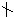

一、基本概念和知识
1.整除——约数和倍数
例如：15÷3=5，63÷7=9
一般地，如a、b、c为整数，b≠0，且a÷b=c，即整数a除以整除b（b不等于0），除得的商c正好是整数而没有余数（或者说余数是0），我们就说，a能被b整除（或者说b能整除a）。记作b｜a.否则，称为a不能被b整除，（或b不能整除a），记作ba。
如果整数a能被整数b整除，a就叫做b的倍数，b就叫做a的约数。
例如：在上面算式中，15是3的倍数，3是15的约数；63是7的倍数，7是63的约数。
2.数的整除性质
性质1：如果a、b都能被c整除，那么它们的和与差也能被c整除。
即：如果c｜a，c｜b，那么c｜（a±b）。
例如：如果2｜10，2｜6，那么2｜（10＋6），
并且2｜（10—6）。
性质2：如果b与c的积能整除a，那么b与c都能整除a.即：如果bc｜a，那么b｜a，c｜a。
性质3：如果b、c都能整除a，且b和c互质，那么b与c的积能整除a。
即：如果b｜a，c｜a，且（b，c）=1，那么bc｜a。
例如：如果2｜28，7｜28，且（2，7）=1,
那么（2×7）｜28。
性质4：如果c能整除b，b能整除a，那么c能整除a。
即：如果c｜b，b｜a，那么c｜a。
例如：如果3｜9，9｜27，那么3｜27。
3.数的整除特征
①能被2整除的数的特征：个位数字是0、2、4、6、8的整数.“特征”包含两方面的意义：一方面，个位数字是偶数（包括0）的整数，必能被2整除；另一方面，能被2整除的数，其个位数字只能是偶数（包括0）.下面“特征”含义相似。
②能被5整除的数的特征：个位是0或5。
③能被3（或9）整除的数的特征：各个数位数字之和能被3（或9）整除。
④能被4（或25）整除的数的特征：末两位数能被4（或25）整除。
例如：1864=1800＋64，因为100是4与25的倍数，所以1800是4与25的倍数.又因为4｜64，所以1864能被4整除.但因为254，所以1864不能被25整除.
⑤能被8（或125）整除的数的特征：末三位数能被8（或125）整除。
例如：29375＝29000＋375，因为1000是8与125的倍数，所以29000是8与125的倍数.又因为125｜375，所以29375能被125整除.但因为8375，所以829375。
⑥能被11整除的数的特征：这个整数的奇数位上的数字之和与偶数位上的数字之和的差（大减小）是11的倍数。
例如：判断123456789这九位数能否被11整除？
解：这个数奇数位上的数字之和是9＋7＋5＋3＋1=25，偶数位上的数字之和是8＋6＋4＋2＝20.因为25—20＝5，又因为115，所以1123456789。
再例如：判断13574是否是11的倍数？
解：这个数的奇数位上数字之和与偶数位上数字和的差是：（4＋5＋1）-（7＋3）＝0.因为0是任何整数的倍数，所以11｜0.因此13574是11的倍数。
⑦能被7（11或13）整除的数的特征：一个整数的末三位数与末三位以前的数字所组成的数之差（以大减小）能被7（11或13）整除。
例如：判断1059282是否是7的倍数？
解：把1059282分为1059和282两个数.因为1059-282＝777，又7｜777，所以7｜1059282.因此1059282是7的倍数。
再例如：判断3546725能否被13整除？
解：把3546725分为3546和725两个数.因为3546-725=2821.再把2821分为2和821两个数，因为821—2＝819，又13｜819，所以13｜2821，进而13｜3546725.